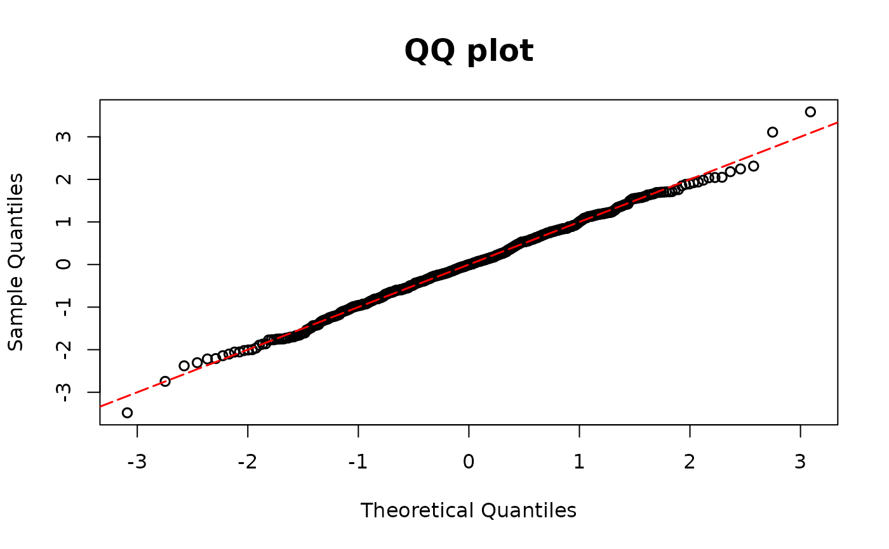

Computes DPIT residuals for Tweedie-distributed outcomes using the observed responses (y),
their fitted mean values (mu), the variance power parameter
(\(\xi\)), and the dispersion parameter (\(\phi\)).
Usage
dpit_tweedie(y, mu, xi, phi, plot=TRUE, scale="normal", line_args=list(), ...)Arguments
- y
Observed outcome vector.
- mu
Vector of fitted mean values of each outcomes.
- xi
Value of \(\xi\) such that the variance is \(Var[Y] = \phi\mu^\xi\)
- phi
Dispersion parameter \(\phi\).
- plot
A logical value indicating whether or not to return QQ-plot The sample quantiles of the residuals are plotted against
- scale
You can choose the scale of the residuals among
normalanduniform. the theoretical quantiles of a standard normal distribution under the normal scale, and against the theoretical quantiles of a uniform (0,1) distribution under the uniform scale. The default scale isnormal.- line_args
A named list of graphical parameters passed to
graphics::abline()to modify the reference (red) 45° line in the QQ plot. If left empty, a default red dashed line is drawn.- ...
Additional graphical arguments passed to
stats::qqplot()for customizing the QQ plot (e.g.,pch,col,cex,xlab,ylab).
Details
For formulation details on semicontinuous outcomes, see dpit.
Examples
## Tweedie model
library(tweedie)
library(statmod)
n <- 500
x11 <- rnorm(n)
x12 <- rnorm(n)
beta0 <- 5
beta1 <- 1
beta2 <- 1
lambda1 <- exp(beta0 + beta1 * x11 + beta2 * x12)
y1 <- rtweedie(n, mu = lambda1, xi = 1.6, phi = 10)
# Choose parameter p
# True model
model1 <-
glm(y1 ~ x11 + x12,
family = tweedie(var.power = 1.6, link.power = 0)
)
y1 <- model1$y
p.max <- get("p", envir = environment(model1$family$variance))
lambda1f <- model1$fitted.values
phi1f <- summary(model1)$dis
resid.tweedie <- dpit_tweedie(y= y1, mu=lambda1f, xi=p.max, phi=phi1f)
